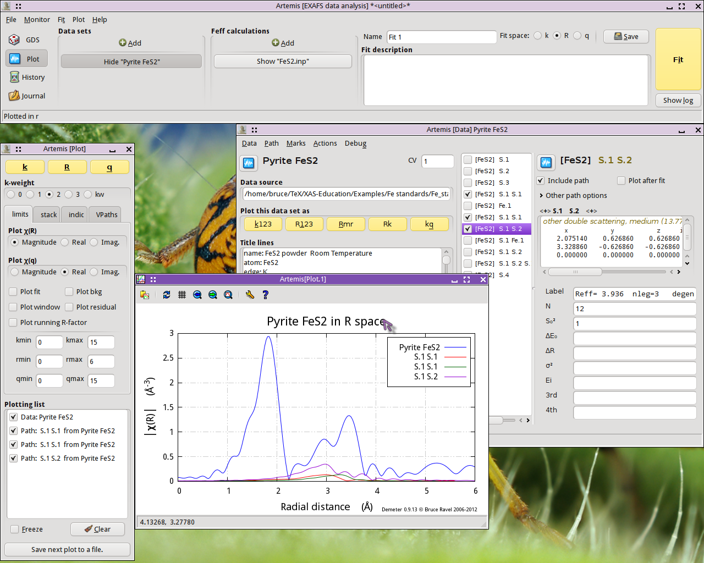

Example 1: FeS2
Introduction, blah blah, known crystal structure, blah blah, learn the
mechanics of the program, blah blah
Import data
After starting ARTEMIS, click on the “Add” button at the top of the “Data sets” list in the Main window. This will open a file
selection dialog. Click to find the ATHENA project file
containing the data you want to analyze. Opening that project file
displays the project selection dialog.

The project file used here has several iron standards. Select
FeS2 from the list. That data set gets plotted when selected.
Now click the “Import” button. That data
set gets imported into ARTEMIS. An entry for the FeS2 is
created in the Data list, a window for interacting with the FeS2
data is created, and the FeS2 data are plotted as χ(k).
The next step is to prepare for the FEFF calculation using the
known FeS2 crystal structure. Clicking on the line in the Data
window that says “Import crystal data or a
Feff calculation” will post a file selection ddialog. Click to find
the atoms.inp file containing the FeS2
crystal structure.

With the FeS2 crystal data imported, run ATOMS by clicking the
“Run Atoms” button on the Atoms tab of the
FEFF windows. That will display the Feff tab containing the
FEFF input data. Click the “Run Feff”
button to compute the scattering potentials and to run the pathfinder.
Once the FEFF calculation is finished, the path intepretation list
is shown in the Paths tab. This is the list of scattering paths,
sorted by increasing path length. Select the first 11 paths by
clicking on the path 0000, then shift-clicking on path 0010. These
group of selected paths will be highlighted. Click on one of the
highlighted paths and, without letting go of the mouse button, drag
the paths over to the Data winodw. Drop the paths on the empty Path
list.

Dropping the paths on the Path list will associate those paths with
that data set. That is, that group of paths is now available to be
used in the fitting model for understanding the FeS2 data.
Each path will get its own Path page. The Path page for a path is
displayed when that path is clicked upon in the Path list. Shown
below is the FeS2 data with its 11 paths. The first path in the
list, the one representing the contribution to the EXAFS from the S
single scattering path at 2.257 Å, is currently displayed.

Examine the scattering paths
The first chore is to understand how the various paths from the
FEFF calculation relate to the data. To this end, we need to
populate the Plotting list with data and paths and make some plots.
First let's examine how the single scattering paths relate to
the data. Mark each of the first four single scattring paths
– the ones labeled
“S.1”,
“S.2”,
“S.3”, and
“Fe.1” – by clicking on their check
buttons. Transfer those four paths to the Plotting list by selecting
“Transfer marked” from the Actions menu.
With the Plotting list poluated as shown below, click on the
“R” plot button in the Plot window to make
the plot shown.

The first interesting thing to note is that the first peak in the data
seems to be entirely explained by the path from the S atom at 2.257
Å. None of the other single scattering paths contribute
significantly to the region of R-space.
The second interesting thing to note is that the next three single
scattering paths are not so well separated from one another. While it
may be tempting to point at the peaks at 2.93 Å and 3.45 Å
and assert that they are due to the second shell S and the fourth
shell Fe, it is already clear that the situation is more
complicated. Those three single scattering paths overlap one
another. Each contriobutes at least some spectral weight to both of
the peaks at 2.93 Å and 3.45 Å.
The first peak shold be reather simple to interpret, but higher shells
are some kind of superposition of many paths.
What about the multiple scattering paths?
To examine those, first clear the Plotting list by clicking the
“Clear” button at the bottom of the Plot
window. Transfer the FeS2 data back to the Plotting list by
clicking its transfer button,  . Mark the first three multiple scattering paths by
clicking their mark buttons. Select
“Transfer marked” from the Actions menu.
. Mark the first three multiple scattering paths by
clicking their mark buttons. Select
“Transfer marked” from the Actions menu.
With the Plotting list newly populated, make a new plot of |χ(R)|.

The two paths labeled “S.1 S.1”, which
represent two different ways for the photoelectron to scatter from a S
atom in the first coordination shell then scatter from another S atom
in the first coordination shell, contribute rather little spectra
weight. Given their small size, it seems possible that we may be able
to ignore those paths when we analyze our FeS2 data.
The “S.1 S.2” path, which first scatters
from a S in the first coordination shell then from a S in the second
coordination shell, contributes significantly to the peak at 2.93
Å. It seems unlikely that we will be able to ignore that path.
To examine the next three multiple scattering paths, clear the
Plotting l ist, mark those paths, and repopulate the Plotting lilst.

The “S.1 Fe.1” path, which scatters from a S
atom in the first coordination shell then scatters from an Fe atom in
the fourth coordination shell, is quite substantial. It will
certainly need to be considered in our fit. The other two paths are
tiny.
Fit to the first coordination shell
We begin by doing an analysis of the first shell. As we saw above,
we only need the first path in the path list. To prepare for the fit,
we do the following:
Exclude all but the first path from the fit. With the first path
selected in the path list and displayed, select
“Mark after current” from the Marks menu.
This will mark all paths except for the first one. Then select
“Exclude marked” from the Actions menu.
This will exclude those paths from the fit. That is indicated by the
triple parentheses in the path list.
Set the values of Rmin and Rmax to cover just the first peak.
For this
simple first shell fit, we set up a simple, four-parameter model. The
parameters amp,
enot,
delr, and
ss are defined in the GDS window and given
sensible initial guess values.
The path parameters for the first shell path are set. S²₀ is set
to amp, E₀ is set
to enot, ΔR is set
to delr, and σ² is set
to ss.
Note that the current settings for k- and R-range result in a bit more
than 7 independent points, as computed from the Nyquist criterion.
With only 4 guess parameters, this should be a reasonable fitting model.

Now hit the “Fit” button. Upon completion
of the fit, the following things happen:
An Rmr plot is made of the data and the fit.
The log Window is displayed with the results of the fit
The Fit and plot buttons are recolored according to the evaluation of
the happiness parameter.
The Plotting list is cleared and repopulated with the data.
The fit is entered into the History window (which is not in the
screenshot below).

This is not a bad result. The value of enot is small, indicatng that a reasonable value of E₀ was
chosen back in ATHENA. delr is small
and consistent with 0, as we should expect for a known crystal.
ss is a reasonable value with a reasonable
error bar. The only confusing parameter is amp, which is a bit smaller than we might expect for a S²₀
value.
The correlations between parameters are of a size that we expect. The
R-factor evaluates to about 2% misfit. χ²ν is really huge, but
that likely means that ε was not evaluated correctly. All
in all, this is a reasonable fit.
Extending the fit to higher shells
The final fitting model
Additional questions